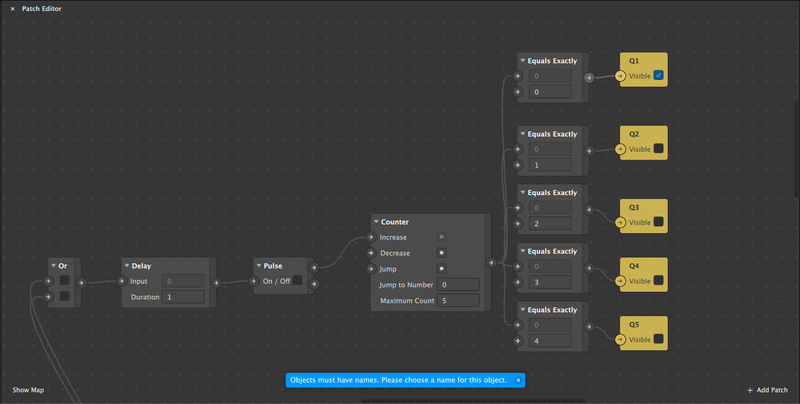

AR Anwendung
Idee
Meine Idee ist es, eine interaktive AR-Anwendung in Spark AR zu erstellen. Dafür bietet das Programm mehrere Optionen. Ich entschied mich hier für das Face-Tracking. Der User soll also durch das Bewegen seines Kopfes mit der Anwendung interagieren können.
Auf Instagram sieht man fast täglich neue AR-Filter bzw. AR-Spiele. Ich ließ mich hier von dem Spiel "Who is more likely to..." (auf deutsch "Wer würde eher...") inspirieren.
Umsetztung
Der erste Schritt hierfür war es, die drei Kreise auf Photoshop zu erstellen, die später auf dem Gesicht liegen sollen.
Danach habe ich auf den Face-Tracker eine Head-Rotation gelegt und die vier verschiedenen Fälle damit verbunden:
- beide Spieler rechts
- beide Spieler links
- rechts/links
- links/rechts
Als nächste Schritt habe ich den grünen Kreis damit verbunden, wenn beide den Kopf in die gleiche Richtung drehen sowie den roten Kreis, wenn die Spieler in unterschiedliche Richtungen schauen. Beim Testen ist mir aufgefallen, dass man den weißen Kreis unsichtbar machen muss, sobald einer dieser Events ausgelöst wird.
Nachdem dieser Fehler behoben wurde, erstellte ich fünf Fragen in Photoshop und fügte diese als Textures ein. Im FaceTracker0 fügte ich pro Frage ein Plane mit dem Material der jeweiligen Frage zu.
Jetzt musste ich im Patch Editor einstellen, dass nach jeder "beantworteten" Frage die Nächste angezeigt wird. Das stellte ich so an: Ich verbinde die Rotation durch ein Or mit einem Delay von einer Sekunde, damit es nicht sofort umspringt. Dann fügte ich einen Counter ein. Dieser zählt nach oben und schaltet je nachdem ein Frage ein beziehungsweise aus.
Prototyp (auf Instagram)
Um die AR-Anwednung auf Instagram auszuprobieren, klicken Sie hier